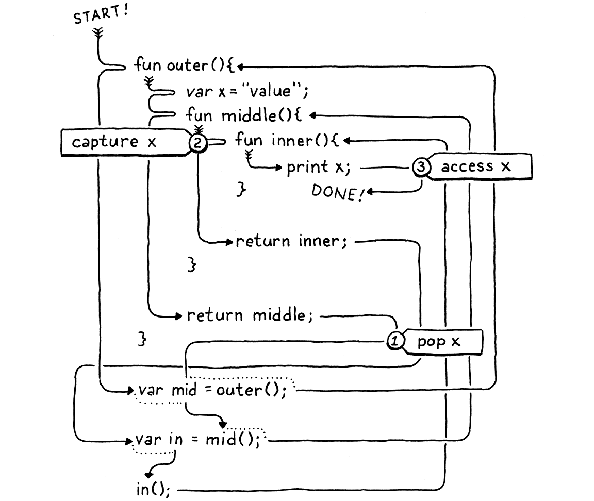

Closures
Như ai đó từng nói, với mỗi vấn đề phức tạp đều có một giải pháp đơn giản, và nó là giải pháp sai.
Umberto Eco, Foucault’s Pendulum
Nhờ công sức miệt mài của chúng ta trong chương trước, giờ ta có một virtual machine với function hoạt động được. Điều còn thiếu là closure. Ngoài global variable — một “giống loài” riêng — một function không có cách nào tham chiếu đến biến được khai báo bên ngoài thân của chính nó.
var x = "global"; fun outer() { var x = "outer"; fun inner() { print x; } inner(); } outer();
Chạy ví dụ này bây giờ sẽ in ra “global”. Lẽ ra nó phải in “outer”. Để sửa, chúng ta cần đưa toàn bộ lexical scope của mọi function bao quanh vào khi resolve một biến.
Vấn đề này khó hơn trong clox so với jlox vì bytecode VM của chúng ta lưu local trên stack. Ta dùng stack vì tôi đã nói rằng local có ngữ nghĩa stack — biến bị loại bỏ theo thứ tự ngược lại với lúc chúng được tạo. Nhưng với closure, điều đó chỉ đúng phần lớn mà thôi.
fun makeClosure() { var local = "local"; fun closure() { print local; } return closure; } var closure = makeClosure(); closure();
Function bên ngoài makeClosure() khai báo một biến local. Nó cũng tạo một function bên trong, closure() bắt lấy biến đó. Rồi makeClosure() trả về một tham chiếu đến function đó. Vì closure thoát ra ngoài trong khi vẫn giữ local variable, local phải sống lâu hơn lần gọi function nơi nó được tạo ra.
Ta có thể giải quyết bằng cách cấp phát động bộ nhớ cho mọi local variable. Đó là cách jlox làm — đặt mọi thứ vào các đối tượng Environment trôi nổi trên heap của Java. Nhưng ta không muốn thế. Dùng stack thì rất nhanh. Phần lớn local variable không bị closure bắt và thực sự có ngữ nghĩa stack. Thật dở khi làm tất cả chúng chậm đi chỉ vì số ít local bị bắt.
Điều này nghĩa là ta cần một cách tiếp cận phức tạp hơn so với interpreter Java của chúng ta. Bởi vì một số local có vòng đời rất khác nhau, ta sẽ có hai chiến lược cài đặt. Với local không dùng trong closure, ta giữ nguyên trên stack. Khi một local bị closure bắt, ta sẽ dùng giải pháp khác: “nhấc” chúng lên heap để chúng có thể sống đủ lâu theo nhu cầu.
Closure đã xuất hiện từ thời Lisp sơ khai khi từng byte bộ nhớ và chu kỳ CPU còn quý hơn ngọc lục bảo. Qua nhiều thập kỷ, các hacker đã nghĩ ra đủ kiểu cách compile closure xuống các biểu diễn runtime tối ưu. Một số cách hiệu quả hơn nhưng đòi hỏi quy trình compile phức tạp hơn mức ta có thể “độ” thêm cho clox một cách dễ dàng.
Kỹ thuật tôi trình bày ở đây lấy cảm hứng từ thiết kế của Lua VM. Nó nhanh, tiết kiệm bộ nhớ, và cài đặt với lượng code tương đối ít. Ấn tượng hơn, nó tự nhiên phù hợp với các compiler một lượt (single-pass) mà cả clox và Lua đều dùng. Tuy hơi rắc rối. Có thể bạn sẽ cần thời gian trước khi mọi mảnh ghép khớp lại trong đầu. Chúng ta sẽ xây chúng từng bước một, và tôi sẽ cố gắng giới thiệu các khái niệm theo từng lớp.
25 . 1Closure Objects
VM của chúng ta biểu diễn function ở runtime bằng ObjFunction. Các object này được tạo ra bởi front end trong quá trình compile. Ở runtime, tất cả những gì VM làm là load function object từ constant table và bind nó với một tên. Không có thao tác nào để “tạo” một function ở runtime. Giống như literal string và number, chúng là các hằng số được khởi tạo hoàn toàn tại thời điểm compile.
Điều này hợp lý vì tất cả dữ liệu cấu thành một function đều đã biết tại thời điểm compile: phần bytecode được compile từ thân hàm, và các constant được dùng trong thân hàm. Tuy nhiên, khi chúng ta đưa closure vào, cách biểu diễn đó không còn đủ nữa. Hãy xem ví dụ:
fun makeClosure(value) { fun closure() { print value; } return closure; } var doughnut = makeClosure("doughnut"); var bagel = makeClosure("bagel"); doughnut(); bagel();
Hàm makeClosure() định nghĩa và trả về một function. Ta gọi nó hai lần và nhận về hai closure. Chúng được tạo ra từ cùng một khai báo function lồng nhau, closure, nhưng mỗi cái đóng (close over) trên một giá trị khác nhau. Khi gọi hai closure này, mỗi cái in ra một chuỗi khác nhau. Điều đó có nghĩa là ta cần một biểu diễn runtime cho closure, thứ sẽ giữ các biến local bao quanh function như chúng tồn tại tại thời điểm khai báo function được execute, chứ không chỉ khi nó được compile.
Chúng ta sẽ dần tiến tới việc bắt biến, nhưng bước đầu tiên hợp lý là định nghĩa cách biểu diễn object đó. Kiểu ObjFunction hiện tại biểu diễn trạng thái “thô” ở thời điểm compile của một khai báo function, vì tất cả closure được tạo từ cùng một khai báo sẽ chia sẻ cùng code và constant. Ở runtime, khi execute một khai báo function, ta sẽ bọc ObjFunction trong một cấu trúc ObjClosure mới. Cấu trúc này tham chiếu tới function gốc cùng với trạng thái runtime cho các biến mà function đóng lên.
Chúng ta sẽ bọc mọi function trong một ObjClosure, ngay cả khi function đó thực tế không đóng và bắt bất kỳ biến local nào xung quanh. Điều này hơi lãng phí, nhưng nó giúp đơn giản hóa VM vì ta luôn có thể giả định function được gọi là một ObjClosure. Struct mới này bắt đầu như sau:
add after struct ObjString
typedef struct { Obj obj; ObjFunction* function; } ObjClosure;
Hiện tại, nó chỉ trỏ tới một ObjFunction và thêm phần header object cần thiết. Theo đúng “nghi thức” khi thêm một kiểu object mới vào clox, ta khai báo một hàm C để tạo closure mới.
} ObjClosure;
add after struct ObjClosure
ObjClosure* newClosure(ObjFunction* function);
ObjFunction* newFunction();
Rồi cài đặt nó ở đây:
add after allocateObject()
ObjClosure* newClosure(ObjFunction* function) { ObjClosure* closure = ALLOCATE_OBJ(ObjClosure, OBJ_CLOSURE); closure->function = function; return closure; }
Hàm này nhận một con trỏ tới ObjFunction mà nó bọc. Nó cũng khởi tạo trường type sang một kiểu mới.
typedef enum {
in enum ObjType
OBJ_CLOSURE,
OBJ_FUNCTION,
Và khi xong với một closure, ta giải phóng bộ nhớ của nó.
switch (object->type) {
in freeObject()
case OBJ_CLOSURE: { FREE(ObjClosure, object); break; }
case OBJ_FUNCTION: {
Ta chỉ giải phóng chính ObjClosure, không giải phóng ObjFunction. Lý do là closure không sở hữu function. Có thể có nhiều closure cùng tham chiếu tới một function, và không closure nào có quyền đặc biệt với nó. Ta không thể giải phóng ObjFunction cho đến khi tất cả object tham chiếu tới nó biến mất — kể cả function bao quanh có constant table chứa nó. Việc theo dõi điều đó nghe đã thấy phức tạp, và đúng là vậy! Đó là lý do chúng ta sẽ viết một garbage collector để quản lý việc này.
Chúng ta cũng có các macro quen thuộc để kiểm tra kiểu của một value.
#define OBJ_TYPE(value) (AS_OBJ(value)->type)
#define IS_CLOSURE(value) isObjType(value, OBJ_CLOSURE)
#define IS_FUNCTION(value) isObjType(value, OBJ_FUNCTION)
Và để cast một value:
#define IS_STRING(value) isObjType(value, OBJ_STRING)
#define AS_CLOSURE(value) ((ObjClosure*)AS_OBJ(value))
#define AS_FUNCTION(value) ((ObjFunction*)AS_OBJ(value))
Closure là object hạng nhất, nên bạn có thể in chúng.
switch (OBJ_TYPE(value)) {
in printObject()
case OBJ_CLOSURE: printFunction(AS_CLOSURE(value)->function); break;
case OBJ_FUNCTION:
Chúng hiển thị giống hệt ObjFunction. Từ góc nhìn của người dùng, sự khác biệt giữa ObjFunction và ObjClosure hoàn toàn là chi tiết ẩn trong phần cài đặt. Vậy là ta đã có một biểu diễn cho closure — hoạt động được nhưng hiện tại vẫn trống rỗng.
25 . 1 . 1Biên dịch sang closure object
Chúng ta đã có closure object, nhưng VM của chúng ta chưa bao giờ tạo ra chúng. Bước tiếp theo là khiến compiler sinh ra instruction để báo cho runtime biết khi nào cần tạo một ObjClosure mới để bọc quanh một ObjFunction cho trước. Điều này xảy ra ngay ở cuối một khai báo function.
ObjFunction* function = endCompiler();
in function()
replace 1 line
emitBytes(OP_CLOSURE, makeConstant(OBJ_VAL(function)));
}
Trước đây, bytecode cuối cùng cho một khai báo function chỉ là một instruction OP_CONSTANT để load function đã compile từ constant table của function bao quanh và push nó lên stack. Giờ chúng ta có một instruction mới.
OP_CALL,
in enum OpCode
OP_CLOSURE,
OP_RETURN,
Giống như OP_CONSTANT, nó nhận một operand duy nhất đại diện cho chỉ số trong constant table của function. Nhưng khi sang phần cài đặt runtime, chúng ta sẽ làm một việc thú vị hơn.
Trước hết, hãy là những hacker VM cẩn thận và thêm hỗ trợ disassembler cho instruction này.
case OP_CALL:
return byteInstruction("OP_CALL", chunk, offset);
in disassembleInstruction()
case OP_CLOSURE: { offset++; uint8_t constant = chunk->code[offset++]; printf("%-16s %4d ", "OP_CLOSURE", constant); printValue(chunk->constants.values[constant]); printf("\n"); return offset; }
case OP_RETURN:
Ở đây có nhiều thứ hơn so với những gì ta thường thấy trong disassembler. Đến cuối chương, bạn sẽ thấy OP_CLOSURE là một instruction khá đặc biệt. Hiện tại nó đơn giản — chỉ một operand một byte — nhưng chúng ta sẽ bổ sung thêm cho nó. Đoạn code này đã chuẩn bị sẵn cho tương lai đó.
25 . 1 . 2Execute khai báo function
Phần lớn công việc cần làm nằm ở runtime. Tất nhiên, ta phải xử lý instruction mới này. Nhưng ta cũng cần chỉnh mọi đoạn code trong VM làm việc với ObjFunction để chuyển sang dùng ObjClosure — lời gọi hàm, call frame, v.v. Tuy nhiên, ta sẽ bắt đầu với instruction trước.
}
in run()
case OP_CLOSURE: { ObjFunction* function = AS_FUNCTION(READ_CONSTANT()); ObjClosure* closure = newClosure(function); push(OBJ_VAL(closure)); break; }
case OP_RETURN: {
Giống như instruction OP_CONSTANT trước đây, đầu tiên ta load function đã compile từ constant table. Điểm khác biệt là giờ ta bọc function đó trong một ObjClosure mới và push kết quả lên stack.
Khi đã có closure, sớm muộn gì bạn cũng sẽ muốn gọi nó.
switch (OBJ_TYPE(callee)) {
in callValue()
replace 2 lines
case OBJ_CLOSURE: return call(AS_CLOSURE(callee), argCount);
case OBJ_NATIVE: {
Chúng ta bỏ đoạn code gọi object có type là OBJ_FUNCTION. Vì ta bọc tất cả function trong ObjClosure, runtime sẽ không bao giờ cố gọi một ObjFunction trần nữa. Những object đó chỉ tồn tại trong constant table và ngay lập tức được bọc trong closure trước khi bất kỳ thứ gì khác thấy chúng.
Ta thay đoạn code cũ bằng code rất giống để gọi closure. Khác biệt duy nhất là kiểu object ta truyền vào call(). Những thay đổi thực sự nằm trong hàm đó. Đầu tiên, ta cập nhật signature hàm.
function call()
replace 1 line
static bool call(ObjClosure* closure, int argCount) {
if (argCount != function->arity) {
Sau đó, trong thân hàm, ta cần sửa mọi chỗ tham chiếu tới function để xử lý việc ta đã thêm một lớp gián tiếp. Bắt đầu với phần kiểm tra arity:
static bool call(ObjClosure* closure, int argCount) {
in call()
replace 3 lines
if (argCount != closure->function->arity) { runtimeError("Expected %d arguments but got %d.", closure->function->arity, argCount);
return false;
Thay đổi duy nhất là ta “mở” closure để lấy function gốc. Tiếp theo, call() tạo một CallFrame mới. Ta sửa đoạn code đó để lưu closure trong CallFrame và lấy con trỏ bytecode từ function của closure.
CallFrame* frame = &vm.frames[vm.frameCount++];
in call()
replace 2 lines
frame->closure = closure; frame->ip = closure->function->chunk.code;
frame->slots = vm.stackTop - argCount - 1;
Điều này buộc phải thay đổi cả khai báo của CallFrame.
typedef struct {
in struct CallFrame
replace 1 line
ObjClosure* closure;
uint8_t* ip;
Thay đổi này kéo theo một vài thay đổi dây chuyền khác. Mọi chỗ trong VM truy cập function của CallFrame giờ phải dùng closure. Đầu tiên là macro đọc constant từ constant table của function hiện tại:
(uint16_t)((frame->ip[-2] << 8) | frame->ip[-1]))
in run()
replace 2 lines
#define READ_CONSTANT() \ (frame->closure->function->chunk.constants.values[READ_BYTE()])
#define READ_STRING() AS_STRING(READ_CONSTANT())
Khi DEBUG_TRACE_EXECUTION được bật, nó cần lấy chunk từ closure.
printf("\n");
in run()
replace 2 lines
disassembleInstruction(&frame->closure->function->chunk, (int)(frame->ip - frame->closure->function->chunk.code));
#endif
Tương tự khi báo lỗi runtime:
CallFrame* frame = &vm.frames[i];
in runtimeError()
replace 1 line
ObjFunction* function = frame->closure->function;
size_t instruction = frame->ip - function->chunk.code - 1;
Gần xong rồi. Mảnh ghép cuối cùng là đoạn code thiết lập CallFrame đầu tiên để bắt đầu execute code top-level của một script Lox.
push(OBJ_VAL(function));
in interpret()
replace 1 line
ObjClosure* closure = newClosure(function); pop(); push(OBJ_VAL(closure)); call(closure, 0);
return run();
Compiler vẫn trả về một ObjFunction thô khi compile một script. Điều đó không sao, nhưng nghĩa là ta cần bọc nó trong một ObjClosure ở đây, trước khi VM có thể execute.
Vậy là chúng ta đã có lại một interpreter hoạt động. Người dùng sẽ không nhận ra sự khác biệt, nhưng compiler giờ sinh code báo cho VM tạo closure cho mỗi khai báo function. Mỗi lần VM execute một khai báo function, nó bọc ObjFunction trong một ObjClosure mới. Phần còn lại của VM giờ xử lý những ObjClosure này. Phần “nhàm chán” đã xong. Giờ chúng ta sẵn sàng để khiến những closure này thực sự làm gì đó.
25 . 2Upvalue
Các instruction hiện tại của chúng ta để đọc và ghi local variable chỉ giới hạn trong cửa sổ stack của một function duy nhất. Local từ một function bao quanh nằm ngoài cửa sổ của function bên trong. Chúng ta sẽ cần một số instruction mới.
Cách đơn giản nhất có thể là một instruction nhận một offset tương đối của stack slot có thể vươn tới trước cửa sổ của function hiện tại. Cách này sẽ hoạt động nếu các biến bị đóng (closed-over) luôn nằm trên stack. Nhưng như ta đã thấy trước đó, đôi khi các biến này sống lâu hơn function nơi chúng được khai báo. Điều đó có nghĩa là chúng sẽ không phải lúc nào cũng nằm trên stack.
Cách đơn giản tiếp theo là: bất kỳ local variable nào bị đóng thì luôn được lưu trên heap. Khi câu lệnh khai báo local variable trong function bao quanh được execute, VM sẽ cấp phát bộ nhớ cho nó một cách động. Như vậy, nó có thể tồn tại lâu tùy ý.
Cách này sẽ ổn nếu clox không phải là một compiler một lượt (single-pass). Nhưng ràng buộc mà ta đã chọn trong phần cài đặt khiến mọi thứ khó hơn. Xem ví dụ này:
fun outer() { var x = 1; // (1) x = 2; // (2) fun inner() { // (3) print x; } inner(); }
Ở đây, compiler compile khai báo x tại (1) và sinh code cho phép gán tại (2). Nó làm điều đó trước khi gặp khai báo inner() tại (3) và phát hiện rằng x thực ra bị đóng. Chúng ta không có cách dễ dàng để quay lại và sửa đoạn code đã sinh để xử lý x đặc biệt. Thay vào đó, ta muốn một giải pháp cho phép một biến bị đóng vẫn sống trên stack giống như một local variable bình thường cho đến thời điểm nó bị đóng.
May mắn thay, nhờ nhóm phát triển Lua, chúng ta có một giải pháp. Ta dùng một lớp gián tiếp mà họ gọi là upvalue. Một upvalue tham chiếu tới một local variable trong một function bao quanh. Mỗi closure duy trì một mảng upvalue, mỗi phần tử tương ứng với một local variable bao quanh mà closure đó sử dụng.
Upvalue trỏ ngược vào stack tới vị trí biến mà nó bắt giữ đang sống. Khi closure cần truy cập một biến bị đóng, nó đi qua upvalue tương ứng để tới được biến đó. Khi một khai báo function được execute lần đầu và ta tạo closure cho nó, VM sẽ tạo mảng upvalue và “nối dây” chúng để “bắt” các local variable bao quanh mà closure cần.
Ví dụ, nếu ta chạy chương trình này trong clox:
{
var a = 3;
fun f() {
print a;
}
}
compiler và runtime sẽ phối hợp để tạo ra một tập hợp object trong bộ nhớ như sau:

Trông có vẻ hơi ngợp, nhưng đừng lo. Chúng ta sẽ đi qua từng bước. Phần quan trọng là upvalue đóng vai trò như một lớp gián tiếp cần thiết để tiếp tục tìm thấy một local variable đã bị bắt ngay cả khi nó đã rời khỏi stack. Nhưng trước khi đến phần đó, hãy tập trung vào việc compile các biến bị bắt.
25 . 2 . 1Compile upvalue
Như thường lệ, ta muốn làm càng nhiều việc càng tốt trong lúc compile để giữ cho quá trình execute đơn giản và nhanh. Vì local variable trong Lox có phạm vi từ vựng (lexical scope), ta có đủ thông tin tại thời điểm compile để resolve xem một function truy cập local variable bao quanh nào và các biến đó được khai báo ở đâu. Điều đó đồng nghĩa ta biết bao nhiêu upvalue một closure cần, biến nào chúng bắt, và stack slot nào chứa các biến đó trong cửa sổ stack của function khai báo.
Hiện tại, khi compiler resolve một identifier, nó duyệt qua các block scope của function hiện tại từ trong ra ngoài. Nếu không tìm thấy biến trong function đó, ta giả định biến đó là global. Ta không xét tới các local scope của function bao quanh — chúng bị bỏ qua. Thay đổi đầu tiên là chèn một bước resolve cho các local scope bên ngoài đó.
if (arg != -1) {
getOp = OP_GET_LOCAL;
setOp = OP_SET_LOCAL;
in namedVariable()
} else if ((arg = resolveUpvalue(current, &name)) != -1) { getOp = OP_GET_UPVALUE; setOp = OP_SET_UPVALUE;
} else {
Hàm resolveUpvalue() mới này tìm một local variable được khai báo trong bất kỳ function bao quanh nào. Nếu tìm thấy, nó trả về một “chỉ số upvalue” cho biến đó. (Chúng ta sẽ nói rõ hơn ý nghĩa của nó sau.) Nếu không tìm thấy, nó trả về -1 để báo biến không tồn tại. Nếu tìm thấy, ta dùng hai instruction mới này để đọc hoặc ghi biến thông qua upvalue:
OP_SET_GLOBAL,
in enum OpCode
OP_GET_UPVALUE, OP_SET_UPVALUE,
OP_EQUAL,
Chúng ta đang triển khai theo kiểu top-down, nên tôi sẽ cho bạn thấy cách chúng hoạt động ở runtime sau. Phần cần tập trung bây giờ là cách compiler thực sự resolve identifier.
add after resolveLocal()
static int resolveUpvalue(Compiler* compiler, Token* name) { if (compiler->enclosing == NULL) return -1; int local = resolveLocal(compiler->enclosing, name); if (local != -1) { return addUpvalue(compiler, (uint8_t)local, true); } return -1; }
Ta gọi hàm này sau khi không resolve được local variable trong scope của function hiện tại, nên ta biết biến đó không nằm trong compiler hiện tại. Nhớ rằng Compiler lưu một con trỏ tới Compiler của function bao quanh, và các con trỏ này tạo thành a linked chain that goes all the way to the root Compiler for the top-level code. Thus, if the enclosing Compiler is NULL, we know we’ve reached the outermost function without finding a local variable. The variable must be global, so we return -1.
Otherwise, we try to resolve the identifier as a local variable in the enclosing compiler. In other words, we look for it right outside the current function. For example:
fun outer() { var x = 1; fun inner() { print x; // (1) } inner(); }
Khi compile biểu thức identifier tại (1), resolveUpvalue() sẽ tìm một local variable x được khai báo trong outer(). Nếu tìm thấy — như trong ví dụ này — thì ta đã resolve thành công biến đó. Ta tạo một upvalue để function bên trong có thể truy cập biến thông qua nó. Upvalue được tạo ở đây:
add after resolveLocal()
static int addUpvalue(Compiler* compiler, uint8_t index, bool isLocal) { int upvalueCount = compiler->function->upvalueCount; compiler->upvalues[upvalueCount].isLocal = isLocal; compiler->upvalues[upvalueCount].index = index; return compiler->function->upvalueCount++; }
Compiler giữ một mảng các cấu trúc upvalue để theo dõi những identifier bị đóng mà nó đã resolve trong thân mỗi function. Hãy nhớ cách mảng Local của compiler phản chiếu các chỉ số stack slot nơi local tồn tại ở runtime? Mảng upvalue mới này hoạt động tương tự. Các chỉ số trong mảng của compiler khớp với các chỉ số nơi upvalue sẽ tồn tại trong ObjClosure ở runtime.
Hàm này thêm một upvalue mới vào mảng đó. Nó cũng theo dõi số lượng upvalue mà function sử dụng. Con số này được lưu trực tiếp trong ObjFunction vì chúng ta cũng sẽ cần nó để dùng ở runtime.
Trường index theo dõi slot index của local variable bị đóng. Nhờ đó, compiler biết biến nào trong function bao quanh cần được bắt. Chúng ta sẽ quay lại giải thích trường isLocal sau. Cuối cùng, addUpvalue() trả về chỉ số của upvalue vừa tạo trong danh sách upvalue của function. Chỉ số này trở thành operand cho các instruction OP_GET_UPVALUE và OP_SET_UPVALUE.
Đó là ý tưởng cơ bản để resolve upvalue, nhưng hàm này vẫn chưa hoàn thiện. Một closure có thể tham chiếu cùng một biến trong function bao quanh nhiều lần. Trong trường hợp đó, ta không muốn lãng phí thời gian và bộ nhớ để tạo một upvalue riêng cho mỗi biểu thức identifier. Để khắc phục, trước khi thêm một upvalue mới, ta kiểm tra xem function đã có upvalue nào đóng trên biến đó chưa.
int upvalueCount = compiler->function->upvalueCount;
in addUpvalue()
for (int i = 0; i < upvalueCount; i++) { Upvalue* upvalue = &compiler->upvalues[i]; if (upvalue->index == index && upvalue->isLocal == isLocal) { return i; } }
compiler->upvalues[upvalueCount].isLocal = isLocal;
Nếu tìm thấy một upvalue trong mảng có slot index trùng với cái ta đang thêm, ta chỉ việc trả về chỉ số upvalue đó và tái sử dụng. Nếu không, ta tiếp tục thêm upvalue mới.
Hai hàm này truy cập và chỉnh sửa khá nhiều trạng thái mới, nên hãy định nghĩa chúng. Đầu tiên, ta thêm số lượng upvalue vào ObjFunction.
int arity;
in struct ObjFunction
int upvalueCount;
Chunk chunk;
Là những lập trình viên C cẩn thận, ta sẽ khởi tạo giá trị này về 0 khi một ObjFunction được cấp phát lần đầu.
function->arity = 0;
in newFunction()
function->upvalueCount = 0;
function->name = NULL;
Trong compiler, ta thêm một trường cho mảng upvalue.
int localCount;
in struct Compiler
Upvalue upvalues[UINT8_COUNT];
int scopeDepth;
Để đơn giản, tôi đặt kích thước cố định cho nó. Các instruction OP_GET_UPVALUE và OP_SET_UPVALUE mã hóa chỉ số upvalue bằng một operand một byte, nên có giới hạn về số lượng upvalue mà một function có thể có — tức là số biến duy nhất mà nó có thể đóng. Với giới hạn đó, ta có thể dùng một mảng tĩnh lớn như vậy. Ta cũng cần đảm bảo compiler không vượt quá giới hạn này.
if (upvalue->index == index && upvalue->isLocal == isLocal) {
return i;
}
}
in addUpvalue()
if (upvalueCount == UINT8_COUNT) { error("Too many closure variables in function."); return 0; }
compiler->upvalues[upvalueCount].isLocal = isLocal;
Cuối cùng là kiểu struct Upvalue:
add after struct Local
typedef struct { uint8_t index; bool isLocal; } Upvalue;
Trường index lưu slot local mà upvalue đang bắt. Trường isLocal xứng đáng có một phần riêng để giải thích, và chúng ta sẽ đến đó ngay.
25 . 2 . 2Làm phẳng upvalue
Trong ví dụ tôi đưa ra trước đó, closure đang truy cập một biến được khai báo trong function bao quanh trực tiếp. Lox cũng hỗ trợ truy cập local variable được khai báo trong bất kỳ scope bao quanh nào, như:
fun outer() { var x = 1; fun middle() { fun inner() { print x; } } }
Ở đây, ta đang truy cập x trong inner(). Biến này không được định nghĩa trong middle(), mà ở tận ngoài outer(). Ta cũng cần xử lý các trường hợp như thế này. Bạn có thể nghĩ rằng điều này không khó hơn nhiều vì biến đó đơn giản sẽ nằm đâu đó xa hơn trên stack. Nhưng hãy xem xét ví dụ “quái chiêu” này:
fun outer() { var x = "value"; fun middle() { fun inner() { print x; } print "create inner closure"; return inner; } print "return from outer"; return middle; } var mid = outer(); var in = mid(); in();
Khi bạn chạy đoạn code này, nó sẽ in ra:
return from outer create inner closure value
Tôi biết, ví dụ này hơi rối. Điểm quan trọng là outer() — nơi x được khai báo — trả về và pop toàn bộ biến của nó khỏi stack trước khi khai báo của inner() được execute. Vì vậy, tại thời điểm chúng ta tạo closure cho inner(), x đã rời khỏi stack.
Dưới đây là sơ đồ tôi đã vẽ lại luồng execute cho bạn:
Bạn thấy x bị pop ① trước khi nó được capture ② và sau đó mới được truy cập ③ chứ? Thực tế, chúng ta có hai vấn đề:
-
Cần resolve các local variable được khai báo trong những function bao quanh, vượt ra ngoài function bao quanh trực tiếp.
-
Cần có khả năng capture các biến đã rời khỏi stack.
May mắn thay, chúng ta đang trong quá trình thêm upvalue vào VM, và upvalue được thiết kế đặc biệt để theo dõi các biến đã thoát khỏi stack. Vì vậy, bằng một chút “đệ quy tự tham chiếu” thú vị, chúng ta có thể dùng upvalue để cho phép upvalue capture các biến được khai báo bên ngoài function bao quanh trực tiếp.
Giải pháp là cho phép một closure capture hoặc là một local variable, hoặc một upvalue hiện có trong function bao quanh trực tiếp. Nếu một function lồng sâu tham chiếu tới một local variable được khai báo cách đó vài cấp, chúng ta sẽ “luồn” nó qua tất cả các function trung gian bằng cách để mỗi function capture một upvalue cho function tiếp theo sử dụng.

Trong ví dụ trên, middle() capture local variable x trong function bao quanh trực tiếp outer() và lưu nó trong upvalue của chính nó. Nó làm vậy ngay cả khi bản thân middle() không hề tham chiếu tới x. Sau đó, khi khai báo inner() được execute, closure của nó lấy upvalue từ ObjClosure của middle() — upvalue này đã capture x. Một function chỉ capture — local hoặc upvalue — từ function bao quanh trực tiếp, và điều này được đảm bảo là vẫn tồn tại tại thời điểm khai báo function bên trong được execute.
Để triển khai điều này, resolveUpvalue() trở thành hàm đệ quy.
if (local != -1) {
return addUpvalue(compiler, (uint8_t)local, true);
}
in resolveUpvalue()
int upvalue = resolveUpvalue(compiler->enclosing, name); if (upvalue != -1) { return addUpvalue(compiler, (uint8_t)upvalue, false); }
return -1;
Chỉ thêm ba dòng code nữa thôi, nhưng tôi thấy hàm này khá khó để viết đúng ngay lần đầu. Mặc dù thực ra tôi không phát minh gì mới, chỉ là chuyển ý tưởng từ Lua sang. Hầu hết các hàm đệ quy hoặc làm toàn bộ công việc trước lời gọi đệ quy (duyệt tiền thứ tự, hay “trên đường đi xuống”), hoặc làm toàn bộ công việc sau lời gọi đệ quy (duyệt hậu thứ tự, hay “trên đường quay lên”). Hàm này thì làm cả hai. Lời gọi đệ quy nằm ngay giữa.
Hãy đi qua nó thật chậm. Đầu tiên, ta tìm một local variable trùng khớp trong function bao quanh. Nếu tìm thấy, ta capture local đó và trả về. Đây là trường hợp cơ sở.
Nếu không, ta tìm một local variable nằm ngoài function bao quanh trực tiếp. Ta làm điều này bằng cách gọi đệ quy resolveUpvalue() trên compiler bao quanh, chứ không phải compiler hiện tại. Chuỗi lời gọi resolveUpvalue() này sẽ lần theo chuỗi compiler lồng nhau cho đến khi gặp một trong các trường hợp cơ sở — hoặc tìm thấy một local variable thực sự để capture, hoặc hết compiler để duyệt.
Khi tìm thấy một local variable, lời gọi lồng sâu nhất tới resolveUpvalue() sẽ capture nó và trả về chỉ số upvalue. Chỉ số này được trả về cho lời gọi tiếp theo (function bên trong hơn). Lời gọi đó sẽ capture upvalue từ function bao quanh, và cứ thế tiếp tục. Khi mỗi lời gọi resolveUpvalue() lồng nhau trả về, chúng ta “đi ngược” trở lại function bên trong cùng nơi identifier đang được resolve. Ở mỗi bước, ta thêm một upvalue vào function trung gian và truyền chỉ số upvalue kết quả xuống lời gọi tiếp theo.
Sẽ dễ hiểu hơn nếu ta lần theo ví dụ ban đầu khi resolve x:

Lưu ý rằng lời gọi mới tới addUpvalue() truyền false cho tham số isLocal. Giờ bạn thấy flag này điều khiển việc closure capture một local variable hay một upvalue từ function bao quanh.
Khi compiler đến cuối một khai báo function, mọi tham chiếu biến đã được resolve thành local, upvalue hoặc global. Mỗi upvalue có thể capture một local variable từ function bao quanh, hoặc một upvalue trong trường hợp closure bắc cầu. Giờ chúng ta đã có đủ dữ liệu để sinh bytecode tạo closure ở runtime, closure này sẽ capture tất cả biến cần thiết.
emitBytes(OP_CLOSURE, makeConstant(OBJ_VAL(function)));
in function()
for (int i = 0; i < function->upvalueCount; i++) { emitByte(compiler.upvalues[i].isLocal ? 1 : 0); emitByte(compiler.upvalues[i].index); }
}
Instruction OP_CLOSURE là duy nhất ở chỗ nó có định dạng mã hóa kích thước thay đổi. Với mỗi upvalue mà closure capture, sẽ có hai operand một byte. Mỗi cặp operand chỉ định upvalue đó capture cái gì. Nếu byte đầu tiên là 1, nó capture một local variable trong function bao quanh. Nếu là 0, nó capture một trong các upvalue của function. Byte tiếp theo là chỉ số slot local hoặc chỉ số upvalue cần capture.
Cách mã hóa đặc biệt này nghĩa là ta cần hỗ trợ riêng trong code disassembly cho OP_CLOSURE.
printf("\n");
in disassembleInstruction()
ObjFunction* function = AS_FUNCTION(
chunk->constants.values[constant]);
for (int j = 0; j < function->upvalueCount; j++) {
int isLocal = chunk->code[offset++];
int index = chunk->code[offset++];
printf("%04d | %s %d\n",
offset - 2, isLocal ? "local" : "upvalue", index);
}
return offset;
Ví dụ, hãy xem script này:
fun outer() { var a = 1; var b = 2; fun middle() { var c = 3; var d = 4; fun inner() { print a + c + b + d; } } }
Nếu chúng ta disassemble instruction tạo closure cho inner(), nó sẽ in ra:
0004 9 OP_CLOSURE 2 <fn inner> 0006 | upvalue 0 0008 | local 1 0010 | upvalue 1 0012 | local 2
Chúng ta còn hai instruction khác, đơn giản hơn, cần thêm hỗ trợ trong disassembler.
case OP_SET_GLOBAL:
return constantInstruction("OP_SET_GLOBAL", chunk, offset);
in disassembleInstruction()
case OP_GET_UPVALUE: return byteInstruction("OP_GET_UPVALUE", chunk, offset); case OP_SET_UPVALUE: return byteInstruction("OP_SET_UPVALUE", chunk, offset);
case OP_EQUAL:
Cả hai đều chỉ có một operand một byte, nên không có gì đặc biệt. Chúng ta chỉ cần thêm một include để module debug có thể dùng AS_FUNCTION().
#include "debug.h"
#include "object.h"
#include "value.h"
Vậy là compiler đã ở trạng thái mong muốn. Với mỗi khai báo function, nó xuất ra một instruction OP_CLOSURE theo sau là một loạt cặp operand byte cho mỗi upvalue cần capture ở runtime. Giờ là lúc chuyển sang phía VM và cho mọi thứ chạy.
25 . 3Upvalue Objects
Mỗi instruction OP_CLOSURE giờ được theo sau bởi một loạt byte chỉ định các upvalue mà ObjClosure sẽ sở hữu. Trước khi xử lý các operand đó, chúng ta cần một biểu diễn runtime cho upvalue.
add after struct ObjString
typedef struct ObjUpvalue { Obj obj; Value* location; } ObjUpvalue;
Chúng ta biết upvalue phải quản lý các biến bị đóng mà không còn sống trên stack, điều này đồng nghĩa với việc cần cấp phát động. Cách dễ nhất để làm điều đó trong VM là xây dựng dựa trên hệ thống object sẵn có. Như vậy, khi chúng ta triển khai garbage collector trong chương tiếp theo, GC cũng có thể quản lý bộ nhớ cho upvalue.
Vì vậy, cấu trúc upvalue ở runtime là một ObjUpvalue với phần header Obj thông thường. Tiếp theo là trường location trỏ tới biến bị đóng. Lưu ý đây là một con trỏ tới Value, không phải chính Value. Nó là tham chiếu tới một biến, không phải giá trị. Điều này quan trọng vì nó có nghĩa là khi chúng ta gán cho biến mà upvalue capture, ta đang gán cho biến thực sự, không phải một bản sao. Ví dụ:
fun outer() { var x = "before"; fun inner() { x = "assigned"; } inner(); print x; } outer();
Chương trình này sẽ in ra "assigned" ngay cả khi closure gán cho x và function bao quanh truy cập nó.
Vì upvalue là object, chúng ta có đầy đủ cơ chế object quen thuộc, bắt đầu với một hàm giống constructor:
ObjString* copyString(const char* chars, int length);
add after copyString()
ObjUpvalue* newUpvalue(Value* slot);
void printObject(Value value);
Hàm này nhận địa chỉ của slot nơi biến bị đóng đang sống. Đây là phần cài đặt:
add after copyString()
ObjUpvalue* newUpvalue(Value* slot) { ObjUpvalue* upvalue = ALLOCATE_OBJ(ObjUpvalue, OBJ_UPVALUE); upvalue->location = slot; return upvalue; }
Chúng ta chỉ cần khởi tạo object và lưu con trỏ. Điều này yêu cầu một kiểu object mới.
OBJ_STRING,
in enum ObjType
OBJ_UPVALUE
} ObjType;
Và ở phía giải phóng, một hàm giống destructor:
FREE(ObjString, object);
break;
}
in freeObject()
case OBJ_UPVALUE: FREE(ObjUpvalue, object); break;
}
Nhiều closure có thể cùng đóng trên một biến, nên ObjUpvalue không sở hữu biến mà nó tham chiếu. Do đó, thứ duy nhất cần giải phóng là chính ObjUpvalue.
Và cuối cùng, hàm in:
case OBJ_STRING:
printf("%s", AS_CSTRING(value));
break;
in printObject()
case OBJ_UPVALUE: printf("upvalue"); break;
}
Việc in này không hữu ích cho người dùng cuối. Upvalue là object chỉ để chúng ta tận dụng quản lý bộ nhớ của VM. Chúng không phải là giá trị hạng nhất mà người dùng Lox có thể truy cập trực tiếp trong chương trình. Vì vậy, đoạn code này sẽ không bao giờ thực sự chạy… nhưng nó giúp compiler không cảnh báo về một nhánh switch chưa xử lý, nên ta vẫn để nó ở đây.
25 . 3 . 1Upvalue trong closure
Khi tôi giới thiệu upvalue lần đầu, tôi đã nói mỗi closure có một mảng upvalue. Giờ chúng ta mới quay lại để triển khai điều đó.
ObjFunction* function;
in struct ObjClosure
ObjUpvalue** upvalues; int upvalueCount;
} ObjClosure;
Các closure khác nhau có thể có số lượng upvalue khác nhau, nên ta cần một mảng động. Bản thân các upvalue cũng được cấp phát động, nên ta có một con trỏ kép — một con trỏ tới một mảng động các con trỏ tới upvalue. Ta cũng lưu số phần tử trong mảng.
Khi tạo một ObjClosure, ta cấp phát một mảng upvalue với kích thước phù hợp, được xác định tại thời điểm compile và lưu trong ObjFunction.
ObjClosure* newClosure(ObjFunction* function) {
in newClosure()
ObjUpvalue** upvalues = ALLOCATE(ObjUpvalue*, function->upvalueCount); for (int i = 0; i < function->upvalueCount; i++) { upvalues[i] = NULL; }
ObjClosure* closure = ALLOCATE_OBJ(ObjClosure, OBJ_CLOSURE);
Trước khi tạo closure object, ta cấp phát mảng upvalue và khởi tạo tất cả phần tử về NULL. Nghi thức “kỳ lạ” này với bộ nhớ là một điệu nhảy cẩn trọng để làm hài lòng các vị thần (garbage collection) sắp tới. Nó đảm bảo bộ quản lý bộ nhớ không bao giờ thấy vùng nhớ chưa được khởi tạo.
Sau đó, ta lưu mảng vào closure mới, đồng thời sao chép số lượng từ ObjFunction.
closure->function = function;
in newClosure()
closure->upvalues = upvalues; closure->upvalueCount = function->upvalueCount;
return closure;
Khi giải phóng một ObjClosure, ta cũng giải phóng mảng upvalue.
case OBJ_CLOSURE: {
in freeObject()
ObjClosure* closure = (ObjClosure*)object; FREE_ARRAY(ObjUpvalue*, closure->upvalues, closure->upvalueCount);
FREE(ObjClosure, object);
ObjClosure không sở hữu các ObjUpvalue bản thân, nhưng nó sở hữu mảng chứa các con trỏ tới những upvalue đó.
Chúng ta sẽ điền mảng upvalue này trong interpreter khi nó tạo closure. Đây là lúc ta duyệt qua tất cả operand sau OP_CLOSURE để xem mỗi slot upvalue capture loại gì.
push(OBJ_VAL(closure));
in run()
for (int i = 0; i < closure->upvalueCount; i++) { uint8_t isLocal = READ_BYTE(); uint8_t index = READ_BYTE(); if (isLocal) { closure->upvalues[i] = captureUpvalue(frame->slots + index); } else { closure->upvalues[i] = frame->closure->upvalues[index]; } }
break;
Đoạn code này chính là khoảnh khắc “ma thuật” khi một closure được hình thành. Chúng ta lặp qua từng upvalue mà closure mong đợi. Với mỗi upvalue, ta đọc một cặp byte operand. Nếu upvalue đóng trên một local variable trong function bao quanh, ta để captureUpvalue() lo phần việc này.
Ngược lại, ta sẽ capture một upvalue từ function bao quanh. Một instruction OP_CLOSURE được generated ở cuối một khai báo function. Tại thời điểm execute khai báo đó, function hiện tại chính là function bao quanh. Điều này có nghĩa closure của function hiện tại được lưu trong CallFrame ở đỉnh callstack. Vì vậy, để lấy một upvalue từ function bao quanh, ta có thể đọc trực tiếp từ biến local frame, biến này giữ tham chiếu tới CallFrame đó.
Việc đóng trên một local variable thú vị hơn. Phần lớn công việc diễn ra trong một hàm riêng, nhưng trước tiên ta cần tính toán đối số để truyền vào nó. Ta cần lấy một con trỏ tới slot của local bị capture trong cửa sổ stack của function bao quanh. Cửa sổ đó bắt đầu tại frame->slots, trỏ tới slot số 0. Cộng thêm index sẽ dịch tới slot local mà ta muốn capture. Ta truyền con trỏ đó vào đây:
add after callValue()
static ObjUpvalue* captureUpvalue(Value* local) { ObjUpvalue* createdUpvalue = newUpvalue(local); return createdUpvalue; }
Nghe có vẻ hơi buồn cười. Tất cả những gì nó làm là tạo một ObjUpvalue mới để capture stack slot được truyền vào và trả về nó. Liệu ta có cần một hàm riêng cho việc này không? Thực ra là chưa cần… nhưng bạn biết đấy, kiểu gì rồi ta cũng sẽ nhét thêm code vào đây.
Trước hết, hãy hoàn tất phần đang làm. Quay lại code trong interpreter xử lý OP_CLOSURE, cuối cùng ta sẽ kết thúc vòng lặp qua mảng upvalue và khởi tạo từng phần tử. Khi hoàn tất, ta có một closure mới với mảng upvalue trỏ tới các biến.
Với điều đó, ta có thể triển khai các instruction làm việc với những upvalue này.
}
in run()
case OP_GET_UPVALUE: { uint8_t slot = READ_BYTE(); push(*frame->closure->upvalues[slot]->location); break; }
case OP_EQUAL: {
Operand là chỉ số trong mảng upvalue của function hiện tại. Vì vậy, ta chỉ cần tìm upvalue tương ứng và dereference con trỏ location của nó để đọc giá trị trong slot đó. Việc gán giá trị cũng tương tự.
}
in run()
case OP_SET_UPVALUE: { uint8_t slot = READ_BYTE(); *frame->closure->upvalues[slot]->location = peek(0); break; }
case OP_EQUAL: {
Chúng ta lấy giá trị trên đỉnh stack và lưu nó vào slot được trỏ bởi upvalue đã chọn. Giống như các instruction cho local variable, điều quan trọng là các instruction này phải nhanh. Chương trình của người dùng liên tục đọc và ghi biến, nên nếu việc này chậm, mọi thứ sẽ chậm theo. Và như thường lệ, cách để làm chúng nhanh là giữ cho chúng đơn giản. Hai instruction mới này khá ổn: không có control flow, không tính toán phức tạp, chỉ vài lần truy cập gián tiếp qua con trỏ và một lệnh push().
Đây là một cột mốc. Miễn là tất cả biến vẫn còn trên stack, chúng ta đã có closure hoạt động. Hãy thử:
fun outer() { var x = "outside"; fun inner() { print x; } inner(); } outer();
Chạy đoạn này, và nó sẽ in ra chính xác "outside".
25 . 4Closed Upvalues
Tất nhiên, một tính năng then chốt của closure là chúng giữ biến lại lâu bao nhiêu tùy cần, ngay cả sau khi function khai báo biến đó đã trả về. Đây là một ví dụ khác nên hoạt động:
fun outer() { var x = "outside"; fun inner() { print x; } return inner; } var closure = outer(); closure();
Nhưng nếu bạn chạy nó ngay bây giờ… ai biết chuyện gì sẽ xảy ra? Ở runtime, nó sẽ đọc từ một stack slot mà không còn chứa biến bị đóng nữa. Như tôi đã nhắc vài lần, mấu chốt của vấn đề là biến trong closure không có ngữ nghĩa stack. Điều đó có nghĩa là ta phải “nhấc” chúng ra khỏi stack khi function nơi chúng được khai báo trả về. Phần cuối cùng của chương này sẽ làm điều đó.
25 . 4 . 1Giá trị & biến
Trước khi viết code, tôi muốn đào sâu vào một điểm ngữ nghĩa quan trọng. Closure đóng trên một giá trị hay một biến? Đây không chỉ là một câu hỏi học thuật suông. Tôi không chỉ đang “bới lông tìm vết”. Hãy xem xét:
var globalSet; var globalGet; fun main() { var a = "initial"; fun set() { a = "updated"; } fun get() { print a; } globalSet = set; globalGet = get; } main(); globalSet(); globalGet();
Hàm main() bên ngoài tạo ra hai closure và lưu chúng vào các biến global để chúng tồn tại lâu hơn cả thời gian execute của chính main(). Cả hai closure này đều capture cùng một biến. Closure đầu tiên gán một giá trị mới cho biến đó, và closure thứ hai đọc giá trị của biến.
Lệnh gọi globalGet() sẽ in ra gì? Nếu closure capture giá trị thì mỗi closure sẽ có bản sao riêng của a với giá trị mà a có tại thời điểm khai báo hàm của closure đó được execute. Lệnh gọi globalSet() sẽ thay đổi bản sao của a trong set(), nhưng bản sao của get() sẽ không bị ảnh hưởng. Do đó, globalGet() sẽ in ra "initial".
Nếu closure capture biến, thì get() và set() sẽ cùng capture — tức là tham chiếu tới — cùng một biến có thể thay đổi. Khi set() thay đổi a, nó thay đổi chính a mà get() đang đọc. Chỉ có một a duy nhất. Điều này đồng nghĩa lệnh gọi globalGet() sẽ in ra "updated".
Vậy là trường hợp nào? Câu trả lời cho Lox và hầu hết các ngôn ngữ tôi biết có closure là trường hợp thứ hai. Closure capture biến. Bạn có thể hình dung chúng như việc capture nơi giá trị sống. Điều này rất quan trọng khi xử lý các biến bị đóng mà không còn nằm trên stack. Khi một biến được chuyển lên heap, ta cần đảm bảo tất cả closure capture biến đó vẫn giữ tham chiếu tới một vị trí mới duy nhất của nó. Như vậy, khi biến bị thay đổi, tất cả closure đều thấy sự thay đổi đó.
25 . 4 . 2Đóng upvalue
Chúng ta biết rằng local variable luôn bắt đầu trên stack. Điều này nhanh hơn và cho phép compiler một lượt (single-pass) sinh code trước khi phát hiện biến đã bị capture. Ta cũng biết rằng các biến bị đóng cần được chuyển lên heap nếu closure sống lâu hơn function nơi biến đó được khai báo.
Theo cách của Lua, ta sẽ dùng thuật ngữ open upvalue để chỉ một upvalue trỏ tới local variable vẫn còn trên stack. Khi biến được chuyển lên heap, ta sẽ đóng upvalue và kết quả, tất nhiên, là một closed upvalue. Có hai câu hỏi cần trả lời:
-
Trên heap, biến bị đóng sẽ được đặt ở đâu?
-
Khi nào thì ta đóng upvalue?
Câu trả lời cho câu hỏi đầu tiên khá dễ. Ta đã có sẵn một object tiện lợi trên heap đại diện cho tham chiếu tới một biến — chính là ObjUpvalue. Biến bị đóng sẽ được chuyển vào một trường mới ngay bên trong struct ObjUpvalue. Như vậy, ta không cần cấp phát heap bổ sung để đóng một upvalue.
Câu trả lời cho câu hỏi thứ hai cũng khá rõ ràng. Miễn là biến còn trên stack, có thể vẫn có code tham chiếu tới nó ở đó, và code đó phải hoạt động đúng. Vì vậy, thời điểm hợp lý để “nhấc” biến lên heap là muộn nhất có thể. Nếu ta chuyển local variable ngay khi nó ra khỏi scope, ta chắc chắn rằng sẽ không có code nào sau đó cố truy cập nó từ stack. Sau khi biến ra khỏi scope, compiler sẽ báo lỗi nếu có code nào cố dùng nó.
Compiler vốn đã sinh ra instruction OP_POP khi một local variable ra khỏi scope. Nếu biến bị closure capture, ta sẽ thay vào đó sinh ra một instruction khác để nhấc biến đó ra khỏi stack và đưa vào upvalue tương ứng. Để làm vậy, compiler cần biết những local nào bị đóng.
Compiler vốn đã duy trì một mảng Upvalue struct cho mỗi local variable trong hàm để theo dõi trạng thái này. Mảng đó rất tốt để trả lời câu hỏi “Closure này dùng những biến nào?”, nhưng lại không phù hợp để trả lời “Có hàm nào capture local variable này không?”. Đặc biệt, khi Compiler của một closure đã kết thúc, Compiler của hàm bao quanh — nơi biến bị capture — không còn truy cập được trạng thái upvalue nữa.
Nói cách khác, compiler duy trì các con trỏ từ upvalue tới local mà chúng capture, nhưng không có chiều ngược lại. Vì vậy, trước tiên ta cần thêm một cơ chế theo dõi bổ sung vào struct Local hiện có để biết một local có bị closure capture hay không.
int depth;
in struct Local
bool isCaptured;
} Local;
Trường này là true nếu local bị bất kỳ khai báo hàm lồng nào sau đó capture. Ban đầu, tất cả local đều không bị capture.
local->depth = -1;
in addLocal()
local->isCaptured = false;
}
Tương tự, “slot zero local” đặc biệt mà compiler ngầm khai báo cũng không bị capture.
local->depth = 0;
in initCompiler()
local->isCaptured = false;
local->name.start = "";
Khi resolve một identifier, nếu ta tạo ra một upvalue cho local variable, ta đánh dấu nó là bị capture.
if (local != -1) {
in resolveUpvalue()
compiler->enclosing->locals[local].isCaptured = true;
return addUpvalue(compiler, (uint8_t)local, true);
Giờ, ở cuối một block scope khi compiler sinh code để giải phóng các stack slot của local, ta có thể biết cái nào cần được nhấc lên heap. Ta sẽ dùng một instruction mới cho việc này.
while (current->localCount > 0 &&
current->locals[current->localCount - 1].depth >
current->scopeDepth) {
in endScope()
replace 1 line
if (current->locals[current->localCount - 1].isCaptured) { emitByte(OP_CLOSE_UPVALUE); } else { emitByte(OP_POP); }
current->localCount--; }
Instruction này không cần operand. Ta biết biến sẽ luôn nằm ngay trên đỉnh stack tại thời điểm instruction này execute. Ta khai báo instruction.
OP_CLOSURE,
in enum OpCode
OP_CLOSE_UPVALUE,
OP_RETURN,
Và thêm hỗ trợ disassembler đơn giản cho nó:
}
in disassembleInstruction()
case OP_CLOSE_UPVALUE: return simpleInstruction("OP_CLOSE_UPVALUE", offset);
case OP_RETURN:
Tuyệt vời. Giờ bytecode sinh ra sẽ báo cho runtime chính xác thời điểm mỗi local variable bị capture phải chuyển lên heap. Hay hơn nữa, nó chỉ làm vậy cho những local thực sự được closure dùng và cần xử lý đặc biệt này. Điều này phù hợp với mục tiêu hiệu năng tổng thể của chúng ta: người dùng chỉ phải trả giá cho tính năng mà họ sử dụng. Các biến không được closure dùng sẽ sống và chết hoàn toàn trên stack như trước đây.
25 . 4 . 3Theo dõi open upvalue
Giờ hãy chuyển sang phía runtime. Trước khi chúng ta có thể execute các instruction OP_CLOSE_UPVALUE, còn một vấn đề cần giải quyết. Trước đó, khi tôi nói về việc closure capture biến hay giá trị, tôi đã nhấn mạnh rằng nếu nhiều closure cùng truy cập một biến thì chúng phải cùng tham chiếu tới chính xác một vị trí lưu trữ trong bộ nhớ. Như vậy, nếu một closure ghi vào biến, closure kia sẽ thấy được sự thay đổi.
Hiện tại, nếu hai closure capture cùng một local variable, VM sẽ tạo một Upvalue riêng cho mỗi closure. Việc chia sẻ cần thiết đang bị thiếu. Khi ta di chuyển biến ra khỏi stack, nếu chỉ di chuyển nó vào một trong các upvalue, upvalue còn lại sẽ bị “mồ côi” giá trị.
Để khắc phục, bất cứ khi nào VM cần một upvalue capture một slot local variable cụ thể, ta sẽ tìm trước xem có upvalue nào đang trỏ tới slot đó không. Nếu có, ta tái sử dụng nó. Thách thức ở đây là tất cả các upvalue đã tạo trước đó đều nằm rải rác trong mảng upvalue của nhiều closure khác nhau. Những closure này có thể ở bất kỳ đâu trong bộ nhớ của VM.
Bước đầu tiên là cung cấp cho VM một danh sách riêng chứa tất cả các open upvalue đang trỏ tới các biến vẫn còn trên stack. Nghe có vẻ việc tìm kiếm danh sách này mỗi khi VM cần một upvalue sẽ chậm, nhưng thực tế thì không tệ. Số biến trên stack thực sự bị đóng thường khá ít. Và các khai báo function tạo closure hiếm khi nằm trên đường execute quan trọng về hiệu năng trong chương trình của người dùng.
Hay hơn nữa, ta có thể sắp xếp danh sách open upvalue theo chỉ số stack slot mà chúng trỏ tới. Trường hợp phổ biến là một slot chưa bị capture — việc chia sẻ biến giữa các closure là không thường xuyên — và closure thường capture các local gần đỉnh stack. Nếu ta lưu mảng open upvalue theo thứ tự stack slot, ngay khi đi qua slot nơi local cần capture đang sống, ta biết chắc sẽ không tìm thấy nữa. Khi local đó ở gần đỉnh stack, ta có thể thoát vòng lặp khá sớm.
Duy trì một danh sách đã sắp xếp đòi hỏi khả năng chèn phần tử vào giữa một cách hiệu quả. Điều này gợi ý nên dùng linked list thay vì mảng động. Vì chúng ta tự định nghĩa struct ObjUpvalue, cách dễ nhất là dùng một danh sách “intrusive” — đặt con trỏ next ngay bên trong struct ObjUpvalue.
Value* location;
in struct ObjUpvalue
struct ObjUpvalue* next;
} ObjUpvalue;
Khi cấp phát một upvalue, nó chưa được gắn vào danh sách nào nên liên kết NULL.
upvalue->location = slot;
in newUpvalue()
upvalue->next = NULL;
return upvalue;
VM sở hữu danh sách này, nên con trỏ head nằm ngay trong struct chính của VM.
Table strings;
in struct VM
ObjUpvalue* openUpvalues;
Obj* objects;
Danh sách bắt đầu rỗng.
vm.frameCount = 0;
in resetStack()
vm.openUpvalues = NULL;
}
Bắt đầu từ upvalue đầu tiên mà VM trỏ tới, mỗi open upvalue sẽ trỏ tới open upvalue tiếp theo tham chiếu tới một local variable nằm sâu hơn trong stack. Ví dụ, đoạn script này:
{
var a = 1;
fun f() {
print a;
}
var b = 2;
fun g() {
print b;
}
var c = 3;
fun h() {
print c;
}
}
Chương trình này sẽ tạo ra một chuỗi các upvalue liên kết như sau:

Bất cứ khi nào chúng ta đóng trên một local variable, trước khi tạo một upvalue mới, ta sẽ tìm xem trong danh sách có upvalue nào đã tồn tại cho biến đó hay chưa.
static ObjUpvalue* captureUpvalue(Value* local) {
in captureUpvalue()
ObjUpvalue* prevUpvalue = NULL; ObjUpvalue* upvalue = vm.openUpvalues; while (upvalue != NULL && upvalue->location > local) { prevUpvalue = upvalue; upvalue = upvalue->next; } if (upvalue != NULL && upvalue->location == local) { return upvalue; }
ObjUpvalue* createdUpvalue = newUpvalue(local);
Ta bắt đầu từ head của danh sách, tức là upvalue gần đỉnh stack nhất. Ta duyệt qua danh sách, dùng một chút so sánh con trỏ để bỏ qua mọi upvalue đang trỏ tới các slot nằm trên slot mà ta đang tìm. Trong khi làm vậy, ta cũng lưu lại upvalue đứng trước trong danh sách. Chúng ta sẽ cần cập nhật con trỏ next của node đó nếu chèn một node mới ngay sau nó.
Có ba lý do khiến ta thoát khỏi vòng lặp:
-
Slot local mà ta dừng lại chính là slot đang tìm. Ta đã tìm thấy một upvalue hiện có đang capture biến đó, nên ta tái sử dụng upvalue này.
-
Hết upvalue để tìm. Khi
upvaluelàNULL, nghĩa là mọi open upvalue trong danh sách đều trỏ tới các local nằm trên slot ta đang tìm, hoặc (nhiều khả năng hơn) danh sách upvalue đang rỗng. Dù thế nào, ta cũng không tìm thấy upvalue cho slot này. -
Tìm thấy một upvalue có slot local nằm dưới slot ta đang tìm. Vì danh sách được sắp xếp, điều này có nghĩa là ta đã đi quá slot cần đóng, và do đó chắc chắn không có upvalue nào tồn tại cho nó.
Trong trường hợp đầu tiên, ta xong việc và trả về. Ngược lại, ta tạo một upvalue mới cho slot local của mình và chèn nó vào danh sách ở đúng vị trí.
ObjUpvalue* createdUpvalue = newUpvalue(local);
in captureUpvalue()
createdUpvalue->next = upvalue; if (prevUpvalue == NULL) { vm.openUpvalues = createdUpvalue; } else { prevUpvalue->next = createdUpvalue; }
return createdUpvalue;
Phiên bản hiện tại của hàm này vốn đã tạo upvalue, nên ta chỉ cần thêm code để chèn upvalue vào danh sách. Ta thoát khỏi vòng duyệt danh sách hoặc là khi đi hết danh sách, hoặc khi dừng ở upvalue đầu tiên có slot stack nằm dưới slot ta đang tìm. Trong cả hai trường hợp, điều đó có nghĩa là ta cần chèn upvalue mới trước object mà upvalue đang trỏ tới (có thể là NULL nếu ta đã tới cuối danh sách).
Như bạn đã học trong môn Cấu trúc dữ liệu 101, để chèn một node vào linked list, bạn đặt con trỏ next của node trước đó trỏ tới node mới. Ta đã tiện tay lưu lại node đứng trước khi duyệt danh sách. Ta cũng cần xử lý trường hợp đặc biệt khi chèn một upvalue mới vào đầu danh sách, khi đó con trỏ “next” chính là con trỏ head của VM.
Với phiên bản hàm đã cập nhật này, VM giờ đảm bảo rằng sẽ chỉ có duy nhất một ObjUpvalue cho mỗi slot local. Nếu hai closure capture cùng một biến, chúng sẽ nhận cùng một upvalue. Giờ ta đã sẵn sàng để di chuyển các upvalue này ra khỏi stack.
25 . 4 . 4Đóng upvalue ở runtime
Compiler sẽ sinh ra instruction OP_CLOSE_UPVALUE để báo cho VM biết chính xác khi nào một local variable cần được nhấc lên heap. Execute instruction đó là nhiệm vụ của interpreter.
}
in run()
case OP_CLOSE_UPVALUE: closeUpvalues(vm.stackTop - 1); pop(); break;
case OP_RETURN: {
Khi gặp instruction này, biến cần nhấc lên heap đang nằm ngay trên đỉnh stack. Ta gọi một hàm tiện ích, truyền vào địa chỉ của stack slot đó. Hàm này chịu trách nhiệm đóng upvalue và di chuyển local từ stack lên heap. Sau đó, VM có thể bỏ slot đó trên stack, việc này được thực hiện bằng cách gọi pop().
Phần thú vị diễn ra ở đây:
add after captureUpvalue()
static void closeUpvalues(Value* last) { while (vm.openUpvalues != NULL && vm.openUpvalues->location >= last) { ObjUpvalue* upvalue = vm.openUpvalues; upvalue->closed = *upvalue->location; upvalue->location = &upvalue->closed; vm.openUpvalues = upvalue->next; } }
Hàm này nhận một con trỏ tới một stack slot. Nó sẽ đóng mọi open upvalue mà nó tìm thấy đang trỏ tới slot đó hoặc bất kỳ slot nào nằm trên nó trong stack. Hiện tại, ta chỉ truyền con trỏ tới slot trên cùng của stack, nên phần “hoặc trên nó” chưa phát huy tác dụng, nhưng sẽ sớm thôi.
Để làm điều này, ta duyệt danh sách open upvalue của VM, từ trên xuống dưới. Nếu location của một upvalue trỏ vào phạm vi các slot đang đóng, ta đóng upvalue đó. Ngược lại, khi gặp một upvalue nằm ngoài phạm vi, ta biết các upvalue còn lại cũng vậy, nên dừng duyệt.
Cách đóng một upvalue khá hay. Đầu tiên, ta sao chép giá trị của biến vào trường closed trong ObjUpvalue. Đây là nơi các biến bị đóng sẽ sống trên heap. Các instruction OP_GET_UPVALUE và OP_SET_UPVALUE cần tìm biến ở đây sau khi nó được di chuyển. Ta có thể thêm một số logic điều kiện trong code interpreter cho các instruction đó để kiểm tra flag xem upvalue đang mở hay đã đóng.
Nhưng thực tế, ta đã có sẵn một lớp gián tiếp — các instruction đó dereference con trỏ location để lấy giá trị của biến. Khi biến di chuyển từ stack sang trường closed, ta chỉ cần cập nhật location trỏ tới chính trường closed của ObjUpvalue.

Chúng ta không cần thay đổi cách OP_GET_UPVALUE và OP_SET_UPVALUE được execute. Điều này giúp chúng đơn giản, và vì thế nhanh hơn. Tuy nhiên, ta cần thêm trường mới vào ObjUpvalue.
Value* location;
in struct ObjUpvalue
Value closed;
struct ObjUpvalue* next;
Và ta nên gán giá trị 0 cho nó khi tạo ObjUpvalue để tránh việc tồn tại vùng nhớ chưa khởi tạo.
ObjUpvalue* upvalue = ALLOCATE_OBJ(ObjUpvalue, OBJ_UPVALUE);
in newUpvalue()
upvalue->closed = NIL_VAL;
upvalue->location = slot;
Bất cứ khi nào compiler tới cuối một block, nó sẽ loại bỏ tất cả local variable trong block đó và sinh ra một OP_CLOSE_UPVALUE cho mỗi local variable bị đóng. Compiler không sinh ra bất kỳ instruction nào ở cuối scope ngoài cùng định nghĩa thân hàm. Scope đó chứa các tham số của hàm và mọi local được khai báo ngay bên trong hàm. Những biến này cũng cần được đóng.
Đây là lý do closeUpvalues() nhận một con trỏ tới một stack slot. Khi một hàm trả về, chúng ta gọi lại hàm tiện ích đó và truyền vào stack slot đầu tiên thuộc sở hữu của hàm.
Value result = pop();
in run()
closeUpvalues(frame->slots);
vm.frameCount--;
Bằng cách truyền vào slot đầu tiên trong cửa sổ stack của hàm, ta đóng tất cả các open upvalue còn lại thuộc về hàm đang trả về. Và với điều đó, giờ ta đã có một triển khai closure hoạt động hoàn chỉnh. Các biến bị đóng sẽ tồn tại miễn là chúng còn được các hàm capture cần đến.
Đây quả là một khối lượng công việc lớn! Trong jlox, closure xuất hiện một cách tự nhiên từ cách biểu diễn environment. Trong clox, chúng ta phải thêm rất nhiều code — instruction bytecode mới, nhiều cấu trúc dữ liệu hơn trong compiler, và các object runtime mới. VM thực sự coi các biến trong closure khác biệt so với các biến khác.
Điều này có lý do của nó. Xét về độ phức tạp triển khai, jlox cho chúng ta closure “miễn phí”. Nhưng xét về hiệu năng, closure của jlox lại không hề “miễn phí” chút nào. Bằng cách cấp phát tất cả environment trên heap, jlox phải trả một cái giá hiệu năng đáng kể cho tất cả local variable, ngay cả phần lớn trong số đó không bao giờ bị closure capture.
Với clox, chúng ta có một hệ thống phức tạp hơn, nhưng điều đó cho phép ta điều chỉnh cách triển khai để phù hợp với hai kiểu sử dụng mà ta quan sát được đối với local variable. Với hầu hết các biến có ngữ nghĩa stack, ta cấp phát chúng hoàn toàn trên stack — vừa đơn giản vừa nhanh. Sau đó, với số ít local variable mà cách này không áp dụng được, ta có một con đường thứ hai chậm hơn để lựa chọn khi cần.
May mắn thay, người dùng không nhận thấy sự phức tạp này. Từ góc nhìn của họ, local variable trong Lox đơn giản và thống nhất. Bản thân ngôn ngữ cũng đơn giản như cách triển khai của jlox. Nhưng bên dưới, clox đang quan sát những gì người dùng làm và tối ưu hóa cho các trường hợp sử dụng cụ thể của họ. Khi việc triển khai ngôn ngữ của bạn trở nên tinh vi hơn, bạn sẽ thấy mình làm điều này thường xuyên hơn. Một phần lớn của “tối ưu hóa” là thêm các đoạn code đặc biệt để phát hiện một số cách sử dụng nhất định và cung cấp một con đường nhanh hơn, được thiết kế riêng cho code phù hợp với mẫu đó.
Giờ đây, chúng ta đã có lexical scoping hoạt động hoàn chỉnh trong clox — một cột mốc quan trọng. Và, khi đã có hàm và biến với vòng đời phức tạp, chúng ta cũng có rất nhiều object trôi nổi trong heap của clox, được kết nối với nhau bằng một mạng lưới con trỏ. Bước tiếp theo là tìm cách quản lý bộ nhớ đó để có thể giải phóng một số object khi chúng không còn cần thiết nữa.
25 . 5Thử thách
-
Việc bọc mỗi
ObjFunctiontrong mộtObjClosuretạo ra một lớp gián tiếp, gây ra chi phí hiệu năng. Chi phí này không cần thiết cho các hàm không đóng trên bất kỳ biến nào, nhưng nó cho phép runtime xử lý tất cả lời gọi một cách thống nhất.Hãy thay đổi clox để chỉ bọc các hàm trong
ObjClosurekhi chúng cần upvalue. So sánh độ phức tạp code và hiệu năng với cách luôn bọc hàm. Hãy cẩn thận benchmark các chương trình có và không dùng closure. Bạn sẽ cân nhắc tầm quan trọng của từng benchmark như thế nào? Nếu một benchmark chậm hơn và một benchmark nhanh hơn, bạn sẽ quyết định đánh đổi ra sao để chọn chiến lược triển khai? -
Đọc ghi chú thiết kế bên dưới. Tôi sẽ đợi. Giờ, bạn nghĩ Lox nên hoạt động thế nào? Hãy thay đổi phần triển khai để tạo một biến mới cho mỗi vòng lặp.
-
Một câu thiền nổi tiếng dạy rằng “object là closure của người nghèo” (và ngược lại). VM của chúng ta chưa hỗ trợ object, nhưng giờ khi đã có closure, ta có thể mô phỏng chúng. Sử dụng closure, hãy viết một chương trình Lox mô phỏng “object” vector hai chiều. Chương trình cần:
-
Định nghĩa một hàm “constructor” để tạo một vector mới với tọa độ x và y cho trước.
-
Cung cấp các “method” để truy cập tọa độ x và y của các giá trị được trả về từ constructor đó.
-
Định nghĩa một “method” cộng để cộng hai vector và tạo ra vector thứ ba.
-
25 . 6Ghi chú thiết kế: Đóng trên biến vòng lặp
Closure capture biến. Khi hai closure capture cùng một biến, chúng chia sẻ tham chiếu tới cùng một vị trí lưu trữ bên dưới. Điều này thể hiện rõ khi gán giá trị mới cho biến đó. Tất nhiên, nếu hai closure capture khác biến, sẽ không có sự chia sẻ nào.
var globalOne; var globalTwo; fun main() { { var a = "one"; fun one() { print a; } globalOne = one; } { var a = "two"; fun two() { print a; } globalTwo = two; } } main(); globalOne(); globalTwo();
Đoạn này in ra "one" rồi "two". Trong ví dụ này, rõ ràng hai biến a là khác nhau. Nhưng không phải lúc nào cũng dễ thấy như vậy. Xem thử:
var globalOne; var globalTwo; fun main() { for (var a = 1; a <= 2; a = a + 1) { fun closure() { print a; } if (globalOne == nil) { globalOne = closure; } else { globalTwo = closure; } } } main(); globalOne(); globalTwo();
Code này hơi vòng vèo vì Lox không có kiểu tập hợp. Phần quan trọng là hàm main() chạy hai vòng lặp for. Mỗi lần lặp, nó tạo một closure capture biến vòng lặp. Nó lưu closure đầu tiên vào globalOne và closure thứ hai vào globalTwo.
Chắc chắn đây là hai closure khác nhau. Nhưng chúng có đóng trên hai biến khác nhau không? Có phải chỉ có một a tồn tại suốt vòng đời vòng lặp, hay mỗi vòng lặp có một biến a riêng biệt?
Script này hơi kỳ cục và gượng ép, nhưng tình huống này xuất hiện trong code thực tế ở các ngôn ngữ không tối giản như clox. Ví dụ JavaScript:
var closures = []; for (var i = 1; i <= 2; i++) { closures.push(function () { console.log(i); }); } closures[0](); closures[1]();
Nó in "1" rồi "2", hay in "3" hai lần? Có thể bạn sẽ bất ngờ khi biết nó in "3" hai lần. Trong chương trình JavaScript này, chỉ có một biến i duy nhất, sống xuyên suốt tất cả các vòng lặp, kể cả khi thoát vòng.
Nếu bạn quen với JavaScript, hẳn bạn biết biến khai báo bằng var được hoist ngầm lên function bao quanh hoặc scope toàn cục. Giống như bạn viết:
var closures = []; var i; for (i = 1; i <= 2; i++) { closures.push(function () { console.log(i); }); } closures[0](); closures[1]();
Lúc này, dễ thấy chỉ có một i. Giờ thử đổi sang từ khóa let mới hơn:
var closures = []; for (let i = 1; i <= 2; i++) { closures.push(function () { console.log(i); }); } closures[0](); closures[1]();
Chương trình mới này có giống trước không? Không. Lần này, nó in "1" rồi "2". Mỗi closure có một i riêng. Điều này hơi lạ nếu nghĩ kỹ. Biểu thức tăng là i++. Trông rất giống đang gán và thay đổi một biến hiện có, chứ không phải tạo biến mới.
Thử vài ngôn ngữ khác. Python:
closures = [] for i in range(1, 3): closures.append(lambda: print(i)) closures[0]() closures[1]()
Python thực ra không có block scope. Biến được khai báo ngầm và tự động thuộc scope của function bao quanh. Giống hoisting trong JS. Vì vậy, cả hai closure capture cùng một biến. Khác với C, ta không thoát vòng lặp bằng cách tăng i vượt giá trị cuối, nên đoạn này in "2" hai lần.
Còn Ruby? Ruby có hai cách lặp số phổ biến. Cách mệnh lệnh cổ điển:
closures = [] for i in 1..2 do closures << lambda { puts i } end closures[0].call closures[1].call
Giống Python, in "2" hai lần. Nhưng cách Ruby “chuẩn” hơn là dùng phương thức bậc cao each() trên đối tượng range:
closures = [] (1..2).each do |i| closures << lambda { puts i } end closures[0].call closures[1].call
Nếu bạn chưa quen Ruby, phần do |i| ... end về cơ bản là một closure được tạo và truyền vào each(). |i| là danh sách tham số cho closure. each() gọi closure đó hai lần, truyền 1 cho i lần đầu và 2 lần sau.
Trong trường hợp này, “biến vòng lặp” thực ra là tham số hàm. Và vì mỗi vòng lặp là một lần gọi hàm riêng, nên chắc chắn đó là các biến khác nhau cho mỗi lần gọi. Nên in "1" rồi "2".
Nếu một ngôn ngữ có cấu trúc lặp dựa trên iterator cấp cao như foreach trong C#, “enhanced for” của Java, for-of trong JavaScript, for-in trong Dart, v.v., thì tôi nghĩ người đọc sẽ thấy tự nhiên khi mỗi vòng lặp tạo một biến mới. Code trông như một biến mới vì phần đầu vòng lặp giống khai báo biến. Và không có biểu thức tăng trông như đang thay đổi biến đó để sang bước tiếp theo.
Nếu bạn tìm trên StackOverflow và các nơi khác, sẽ thấy bằng chứng rằng đây là điều người dùng mong đợi, vì họ rất ngạc nhiên khi không được như vậy. Đặc biệt, C# ban đầu không tạo biến vòng lặp mới cho mỗi vòng foreach. Điều này gây nhầm lẫn thường xuyên đến mức họ đã thực hiện một thay đổi phá vỡ tương thích ngược hiếm hoi. Trong C# 5, mỗi vòng lặp tạo một biến mới.
Vòng lặp for kiểu C cũ khó hơn. Biểu thức tăng thực sự trông như đang thay đổi biến. Điều đó ngụ ý chỉ có một biến được cập nhật mỗi bước. Nhưng gần như không bao giờ có ích khi mỗi vòng chia sẻ biến vòng lặp. Cách duy nhất bạn nhận ra điều này là khi closure capture nó. Và hiếm khi hữu ích khi closure tham chiếu một biến có giá trị là giá trị khiến bạn thoát vòng lặp.
Câu trả lời thực dụng có lẽ là làm như JavaScript với let trong vòng for. Làm nó trông như thay đổi biến nhưng thực ra tạo biến mới mỗi lần, vì đó là điều người dùng muốn. Dù nghĩ kỹ thì cũng hơi kỳ.